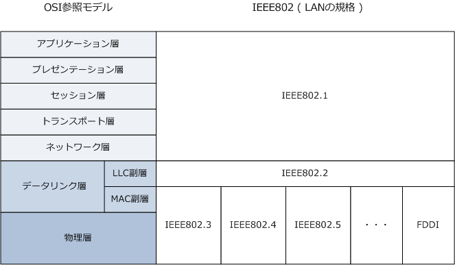

FastEthernet / GigabitEthernet / 10GigabitEthernet
LANの規格
LANの代表的な規格には、イーサネット、トークンリング、FDDIがあります。今日のネットワークでは トークンリングやFDDIはほぼ使用されていないので、今回の解説はイーサネットLANに焦点を当てます。
| 規格 | IEEE | 媒体アクセス制御方式 | 伝送メディア | トポロジー | 伝送速度 |
|---|---|---|---|---|---|
| イーサネット | 802.3 | CSMA/CD | 同軸ケーブル | バス型 | 10Mbps ～ |
| イーサネット | 802.3 | CSMA/CD | UTPケーブル | スター型 | 10Mbps ～ |
| イーサネット | 802.3 | CSMA/CD | 光ファイバーケーブル | 拡張スター型 | 10Mbps ～ |
| トークンリング | 802.5 | トークンパッシング | STPケーブル | リング型 | 4M or 16Mbps |
| FDDI | - | トークンパッシング | 光ファイバーケーブル | 二重リング型 | 100Mbps ～ |
LANの規格は、OSI参照モデルの上では物理層とデータリンク層の2つの階層に位置します。そして IEEEが定義するLAN規格では、データリンク層はLLC副層とMAC副層の2つの副層に分類されています。

| 100Base-TX | |
|---|---|
| MAC (Media Access Contorl) 副層 | 媒体アクセス制御。MACアドレスのアドレッシング機構を提供する。フレームの 送受信方法、フレームの形式、誤り検出方法なども規定。物理層の上に位置する。 |
| LLC (Logical Link Control) 副層 | 論理リンク制御。イーサネットやトークンリングなどのネットワーク媒体の種類の違いに 関係なく、ネットワーク層からネットワーク媒体を同じ手順で利用できるようにするもの。 |
※ 現在ではLLC層は使用されておらずIEEE802.2も活動休止中。MAC層とLLC層を併せ持つEthernet?Uフレームの使用が一般的。
イーサネット規格の命名規則
イーサネットの規格名は、伝送メディア（ケーブルの種類）や伝送速度により以下の命名規則があります。 ここでは100Base-TXを例に解説します。100Base-TXの読み方は「ヒャクベースティーエックス」です。
| 100Base-TX | ||
|---|---|---|
| 100 | 伝送速度 | 「10」の場合は10Mbps、「100」の場合は100Mbps、「1000」の場合は1000Mbps。 |
| Base | 伝送形式 | 「Base」はベースバンド方式の意味。イーサネットでは現在ベースバンド方式以外はない。 |
| TX | ケーブルの種類 | 数字の場合は最大セグメント長※1、アルファベットの場合はケーブルの種類を意味する。 「T」はUTP、「F」は光ファイバー、「X」の場合FDDIの技術の使用※2 を意味する。 |
※1 10Base5の最大ケーブル長は「500M」なので「5」ですが、10Base2の最大ケーブル長は「200M」ではなく「185M」です。 ※2 100Base-TXはFDDIの物理層規格を借用しているので「X」が名称として付け加えられています。
イーサネット ( 10Mbps )
イーサネットとして、10Base5 ⇒ 10Base2 ⇒ 10Base-Tの順番で標準化されたので当初は同軸ケーブルを 使用したバス型のトポロジーを採用していましたが、バス型のトポロジーでは一箇所に故障が発生した場合 その同軸ケーブルに接続したネットワーク全体が通信できなくなるので、10BaseTが登場してからはすぐに UTPケーブルとハブ（集線装置）を使用したスター型のトポロジーに移行していきました。以降バス型は衰退。
| 規格名 | IEEE | 伝送媒体 | コネクタ | 最大長 | トポロジー |
|---|---|---|---|---|---|
| 10Base5 | IEEE802.3 | 同軸ケーブル | AUI | 500m | バス |
| 10Base2 | IEEE802.3a | 同軸ケーブル | BNC | 185m | バス |
| 10Base-T | IEEE802.3i | UTPケーブル (2対のCAT3以上) | RJ-45 | 100m | スター |
ファーストイーサネット ( 100Mbps )
通信速度を100Mbpsにしたイーサネット規格。最も使用されている規格が100Base-TXです。100Base-T4 が使用されることは先ずありません。最大ケーブル長の100mを超える配線が必要な場合は、100Base-FX が使用されますが、そのような配線は一般的にギガビットイーサネットで行います。なお、100Base-TXに 対応した機器は10Base-Tも対応しており、対向機器の状況に応じ10 or 100Mbpsのどらかを使用できます。
| 規格名 | IEEE | 伝送媒体 | コネクタ | 最大長 | トポロジー |
|---|---|---|---|---|---|
| 100Base-TX | IEEE802.3u | UTPケーブル (2対のCAT5以上) | RJ-45 | 100m | スター |
| 100Base-T4 | IEEE802.3u | UTPケーブル (4対のCAT3以上) | RJ-45 | 100m | スター |
| 100Base-FX | IEEE802.3u | 光ファイバ （マルチモード） | ST | 400m | スター |
ギガビットイーサネット ( 1Gbps )
通信速度を1000Mbpsにしたイーサネット規格。現在は、エンドユーザのPCとLANスイッチ間の通信速度が 100Mbpsが一般的であることから、バックボーンのネットワークではギガビットイーサネットにすることが 一般的になっています。ギガビットイーサネットには以下の規格がありますが、1000Base-CXは、あまり 使用されることはありませんが、工場などのノイズが多い場所でも高い通信速度を求められる状況では使用。 1000BaseT/SX/LXについては機器が持っているインターフェース、ケーブル配線距離に応じて使用します。
| 規格名 | IEEE | 伝送媒体 | コネクタ | 最大長 | トポロジー |
|---|---|---|---|---|---|
| 1000Base-CX | IEEE802.3z | STPケーブル | RJ-45 | 25m | スター |
| 1000Base-T | IEEE802.3ab | UTPケーブル | RJ-45 | 100m | スター |
| 1000Base-SX | IEEE802.3z | 光ファイバ （マルチモード） | SC or LC | 550m | スター |
| 1000Base-LX | IEEE802.3z | 光ファイバ （マルチモード） | SC or LC | 550m | スター |
| 1000Base-LX | IEEE802.3z | 光ファイバ （シングルモード） | SC or LC | 10km | スター |
| 1000Base-ZX | Cisco独自 | 光ファイバ （シングルモード） | LC | 100Km | スター |
なお、GLC-SX-MM (1000BASE-SX)、 GLC-LH-SM (1000BASE-LX(SMF/MMF) )、GLC-ZX-SM (1000BASE-ZX) はどの製品も LCコネクタです。Cisco機器で光ファイバー接続を行う場合、企業ネットワークでは GLC-SX-MM= を使用するケースが多いです。 企業ネットワークでは、光ファイバーを使用する場合はビルのフロアー間接続などが主であり、距離的にシングルモードの光ファイバ を必要としないからです。価格もGLC-SX-MM= → GLC-LH-SM= → GLC-ZX-SM順で高くなります。GLC-ZX-SM はまずないです。
10ギガビットイーサネット ( 10Gbps )
通信速度を10Gbpsにしたイーサネット規格。10Gbpsのイーサネット規格は大きくLAN向けの「LAN PHY」と WAN向けの「WAN PHY」の2つに分かれます。 LAN PHYでは「10GBase-R、10GBase-X、10GBase-T」の 規格群が使用されます。また、WAN PHYでは「10GBase-W」ファミリー規格が使用されます。WAN PHYは SONET/SDHネットワーク（※1）に接続可能な仕様のグループを指します。用途や距離に応じて使用します。
| 物理層規格 | 規格群 | 規格名 | IEEE | 伝送媒体 | 最大長 |
|---|---|---|---|---|---|
| LAN PHY | 10GBase-T | 10GBase-T | IEEE802.3an | UTPケーブル ( CAT6a/CAT7 ) | 100m |
| LAN PHY | 10GBase-X | 10GBase-LX4 | IEEE802.3ae | MMF ※2 | 240m |
| LAN PHY | 10GBase-X | 10GBase-LX4 | IEEE802.3ae | SMF ※3 | 10km |
| LAN PHY | 10GBase-R | 10GBase-SR | IEEE802.3ae | MMF ※4 | 300m |
| LAN PHY | 10GBase-R | 10GBase-LR | IEEE802.3ae | SMF | 10km |
| LAN PHY | 10GBase-R | 10GBase-ER | IEEE802.3ae | SMF | 40km |
| WAN PHY | 10GBase-W | 10GBase-SW | IEEE802.3ae | MMF | 300m |
| WAN PHY | 10GBase-W | 10GBase-LW | IEEE802.3ae | SMF | 10km |
| WAN PHY | 10GBase-W | 10GBase-EW | IEEE802.3ae | SMF | 40km |
※1 SONET/SDH ： 光ファイバーを用いた高速デジタル通信方式の国際規格。ISP間を結ぶバックボーン回線で使用します。 ※2 MMF (Multi Mode Fiber) ： マルチモード光ファイバー ※3 SMF (Single Mode Fiber) ： シングルモード光ファイバー ※4 Cisco SFP-10G-SRがサポートするリンク長は、MMFでは26m、2000 MHz*km MMF（OM3）では300m。OM3が推奨です。